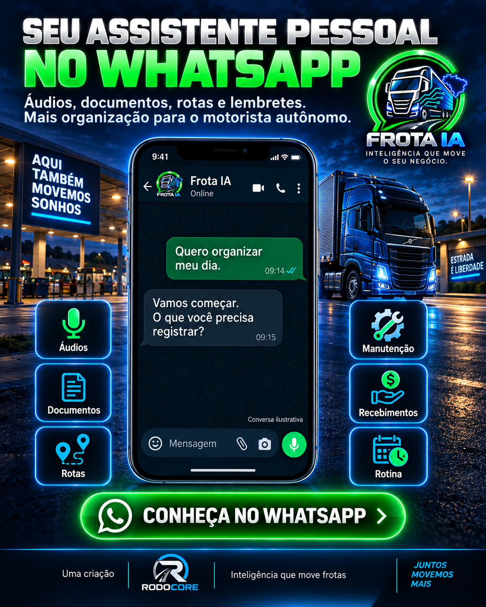
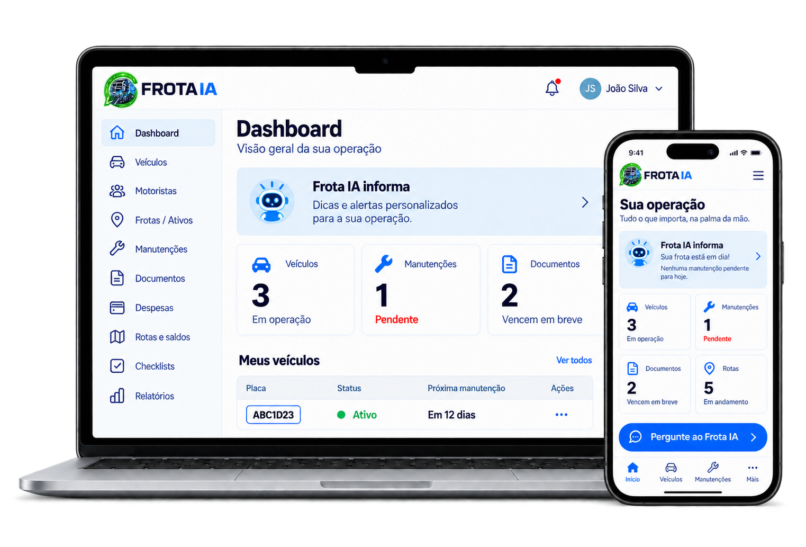

Fale por áudio
Conte o que gastou ou o que precisa lembrar. O assistente interpreta sua mensagem e pede os dados que faltarem.
Ver exemplo de áudioSEU ASSISTENTE DO TRANSPORTE NO WHATSAPP
Menos caderninho. Mais controle de gastos, manutenção e viagens — com uma conversa.
Mande um áudio. Envie um documento.
Recebeu um frete? Mande o print para analisar.
Conheça antes de assinar: demonstração de frete, rota e custo.
A gestão do caminhão é liberada no plano contratado.

VOCÊ MANDA. O FROTA IA AJUDA A ENTENDER.
Conte o que gastou ou o que precisa lembrar. O assistente interpreta sua mensagem e pede os dados que faltarem.
Ver exemplo de áudioMande uma foto legível ou um PDF suportado. Receba ajuda para entender valores, datas e informações, sem redigitar tudo.
Ver leitura de documentoO Frota IA lê os dados visíveis da oferta, pede o que faltar e ajuda a estimar os custos e a sobra da viagem.
Ver análise de um freteEstimativa com os dados informados. Não é garantia de lucro.MENOS COISA PARA GUARDAR NA CABEÇA
Não precisa aprender um sistema.
Conte o que aconteceu com seu caminhão.
Registre abastecimentos, pedágios e outras despesas. Consulte os gastos quando precisar.
“Quanto gastei com diesel este mês?”
Organize serviços, despesas com pneus e lembretes de revisão por data.
“Me lembre da troca de óleo sexta, às 9h.”
Guarde informações do frete e peça ajuda para estimar os custos antes de aceitar.
“Esse frete compensa para mim?”
SIMPLES COMO UMA CONVERSA
Do áudio com um gasto ao print de uma oferta de frete. Veja como o Frota IA pode ajudar a organizar os dados e entender os custos.
Conversas e valores ilustrativos. Não são registros reais.
Funções de gestão dependem do plano contratado.
Paguei R$ 180 de pedágio hoje.09:14
Pedágio de R$ 180 para o seu caminhão, na data de hoje. Posso registrar?09:14
Pode. Quanto deu de despesas hoje?09:15
Neste exemplo, suas despesas de hoje são:
QUANDO PRECISAR, É SÓ PEDIR
Ajuda para ler informações em fotos e PDFs suportados. Sem redigitar tudo.
Estimativas para planejar a viagem com os dados que você informar. Não é GPS especializado para caminhão.
Oportunidades em grupos autorizados e configurados. Sem garantia de oferta ou contratação.
Ative o resumo para receber informações do transporte no seu WhatsApp.
FEITO PARA QUEM TEM UM CAMINHÃO
Comece pelo WhatsApp. Conheça a proposta e escolha o plano quando fizer sentido para você.
Experimente a demonstração de frete, rota e custo.
Confira as condições de pagamento antes de contratar.
Comece pelos gastos e lembretes do seu dia.
FROTA IA INDIVIDUAL
R$ 89,90/mês
Ou R$ 899,00 por 12 meses no plano anual.
Confira os meios de pagamento, parcelamento e renovação no checkout. Nenhuma cobrança é feita nesta página.
SUA OPERAÇÃO CRESCEU?
Os planos Essencial e Pro combinam WhatsApp e painel web para acompanhar a frota.
R$ 149,90/mês · Até 3 veículos
Conhecer EssencialR$ 249,90/mês · Até 10 veículos
Conhecer ProAcima de 10 veículos: proposta personalizada pelo atendimento comercial. Falar sobre o plano Empresas

SEM COMPLICAÇÃO
Não. O plano Individual funciona pelo WhatsApp. O painel web é oferecido nos planos Essencial e Pro.
A demonstração apresenta frete, rota e custo. Os registros e as ferramentas de gestão são disponibilizados conforme o plano contratado. Enviar uma foto ou um áudio não libera, por si só, todas as funções.
Sim, nos formatos suportados. Se um arquivo estiver ilegível ou faltar uma informação, o assistente pode pedir confirmação ou reenvio. A leitura não substitui validação fiscal ou documental.
O resumo usa as receitas e despesas que foram registradas. Se houver gastos não informados, o resultado estará incompleto. As estimativas de viagem dependem dos dados fornecidos.
Informe o compromisso, a data e o horário. Confira a confirmação do agendamento. Lembretes não substituem as recomendações de manutenção do fabricante.
Conheça os planos com painel: Essencial para até 3 veículos e Pro para até 10. Acima disso, o atendimento comercial prepara uma proposta.
VOCÊ JÁ SABE USAR. É PELO WHATSAPP.
Demonstração de frete, rota e custo antes de assinar.